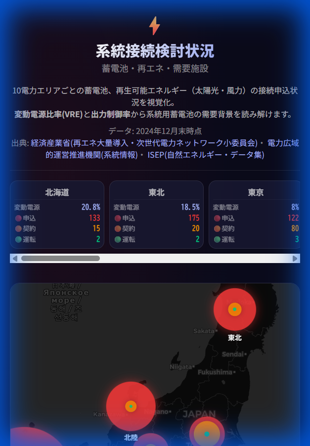

日本の電力系統における「系統用蓄電池」「再生可能エネルギー（太陽光・風力）」の接続申込状況を 10電力エリアごとに可視化したインタラクティブ・ダッシュボードです。 再エネ導入拡大に伴う出力制御の増加と、調整力としての系統用蓄電池への期待を背景に、 全国での接続申込の急増を直感的に理解するために開発されました。
経済産業省（再エネ大量導入・次世代電力ネットワーク小委員会）、電力広域的運営推進機関（OCCTO）、 ISEP（自然エネルギー・データ集）の2024年12月末時点データを使用しています。